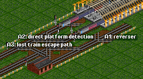
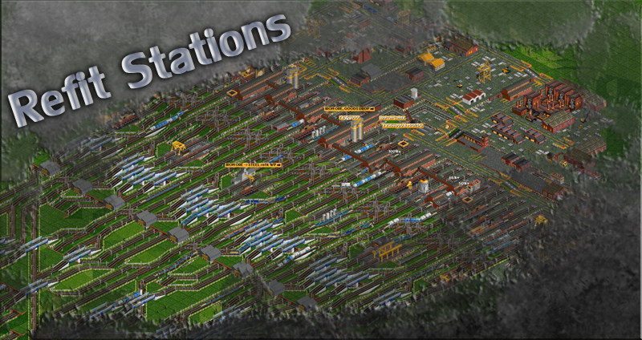
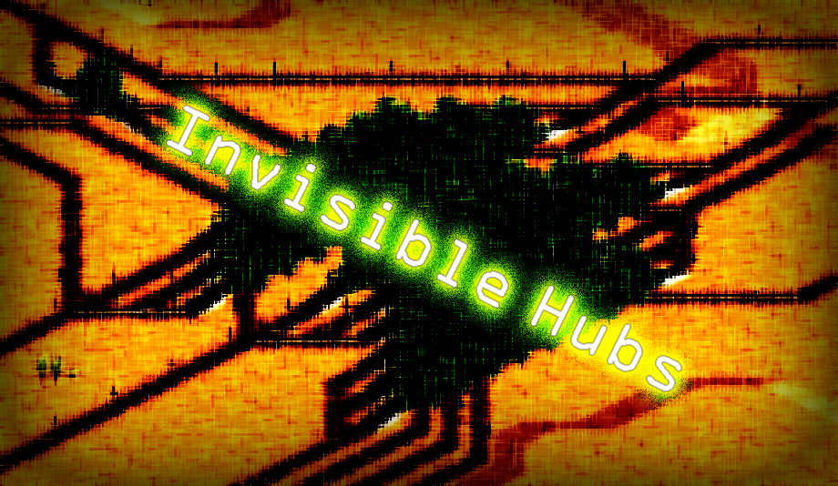
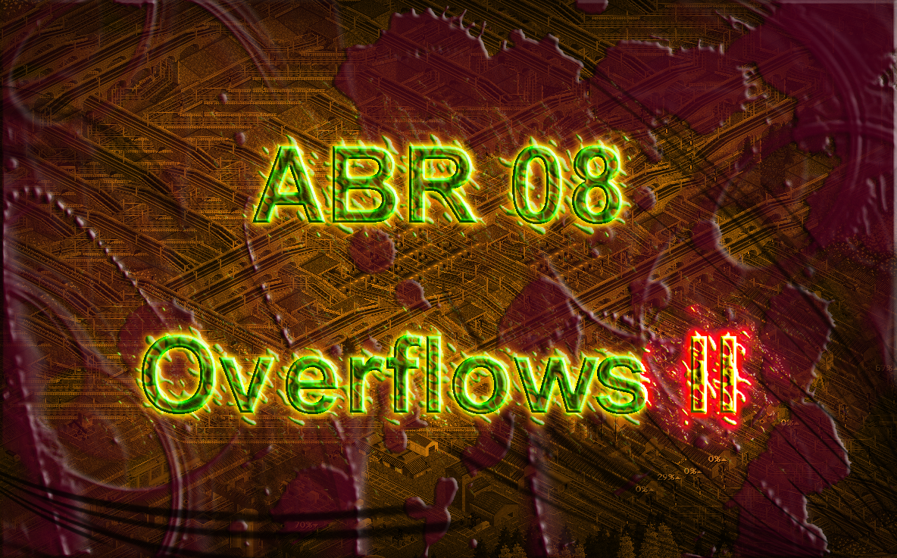
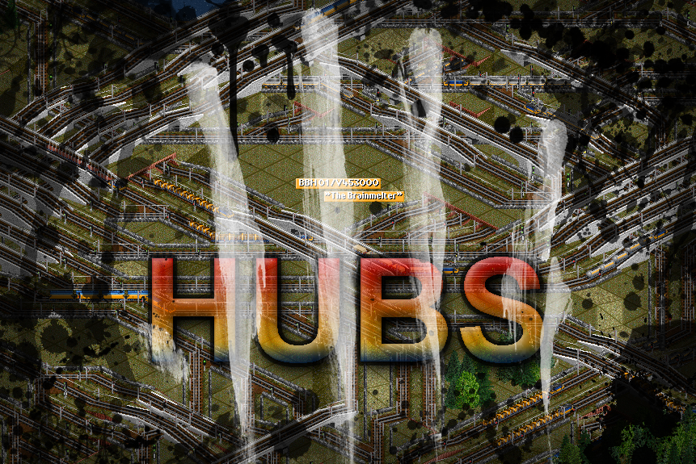
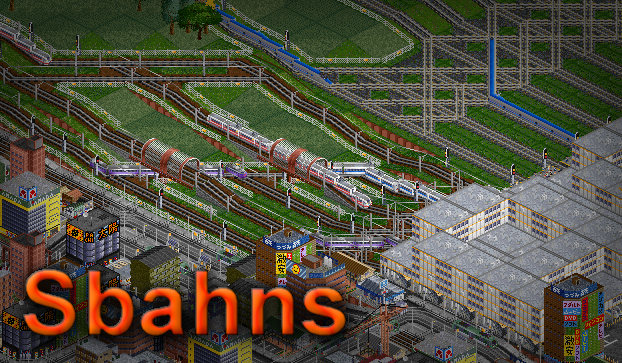
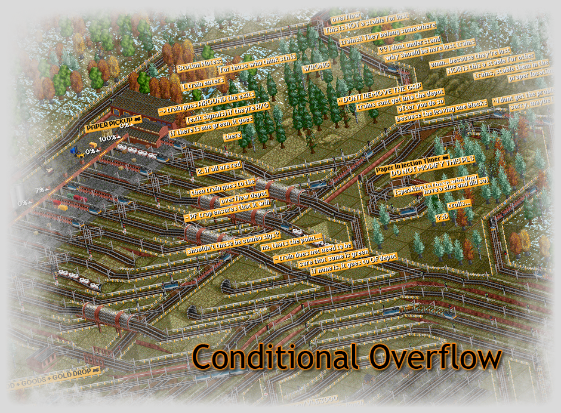

#openttdcoop wiki: preserved copy
Wiki
About 400 articles: guides, the Junctionary, glossary, rules and servers.
Blog
371 posts, 2006-2017. Latest:
Members
The member list links to 156 member user pages.
Advanced Building Revue
The coop's series on advanced network building, from the old blog.
Advanced Building Revue 13: Self Regulating Stations II
Self-regulating Stations are one of the most insteresting stations known throughout OTTD. The purpose and design of such station may differ, but in general they make sure the self-regulating trains get fully loaded. This article will address the constructions and designs of Self-regulating stations, their limitations, and how this might be improved by building Asynchronous Self-regulating Stations – some preliminary…

Advanced Building Revue 12: Overflows III
Let me introduce you to the third part of the Overflow series of ABR, in this article I aim to note the most interesting innovations to overflow construction which are not described in the previous articles. Also you will be able to read about some less overflow related things, but vital for general building. The article is not sorted chronologically,…

Advanced Building Revue 11: Refit Stations
Refit stations are a pretty special and separate topic which we use in the refit games. For all the past time we have of course made some development in those and they include a few features to keep in mind. This article will be similar to the overflow articles – it is meant to summarize the progress and show what…

Advanced Building Revue 10: Invisible Hubs
This time I am going to show a technique of building hubs called “Invisible Hubs”. Their name comes from the fact that one part of the hub is basically all hidden under bridges or in tunnels. An introduction to yet another interesting technique how to build hubs, particularly regarding SLHs. You might have already noticed one such hub as SLH03 …


Advanced Building Revue 09: Self Regulating Stations
It has been quite a while since Mark introduced the SRNW and since then, we have tried quite a few self regulating stations and networks. The main point of this article is in showing the station designs that we already used in the past, and uncover the reasons why such a construction as a transfer station is so key for…

Advanced Building Revue 08: Overflows II
It is quite a long time since the first article on overflows got introduced. As time passed by, I developed this topic towards the form of overflows we use now and I may mention something we haven’t used yet ;). This article is going to be about yet more overflows, this time much more advanced than the original ones. I…

Advanced Building Revue 07: Stations
Building stations is one of the most essential things in OpenTTD. To build a station doesn’t require any experience (besides knowing which button to press), although construction of a station that works perfectly requires some deeper and in under-rated amount of knowledge. The point of this article isn’t in showing all possibilities how to make a station, but it should…

Advanced Building Revue 06: Hubs
The fun, the creativity, the high league, the madness, the spaghetti, the mess, the weirdness, the braindisruptors. What else is so typical for our superior gaming style? Building hubs. In this article I am going to go into hub logics and techniques, examining some possibilities how a hub can be made. This article should help one realize what to think…

Advanced Building Revue 05: Sbahns and city networks
Sbahns. We don’t use them in every pax game and even pax games aren’t all that often. So creating a Sbahn doesn’t get that much attention, or that much experience from us. On the other hand, creating a good Sbahn is a very responsible task because mostly the rebuilds and corrections of a Sbahn require nuking a major part of…

Advanced Building Revue 04: Overflows
In general, we don’t use overflows all that often. In this article I would like to note why to use them, why not to, and of course – I will present some overflows I came up with.
Most overflows will not work without setting yapf.rail_firstred_twoway_eol = 1
for more info see relevant wiki page.…

Advanced building revue 03: Path to insanity
Let’s face it. We are insane. (who didn’t know that, please stop reading immediately) This article is aimed to be a bit special. In what way? I am not going to speak about some new concept that is just nuts or show some insane techniques. I would like to show, how about can one get better, and/or how did it…

Advanced Building Revue 02: Splits
We have had many articles about mergers, merging, balancing, packing, and so on because it definitely is one of the most important parts in our every game. This one is about the counterpart. Splitting. In this article I would like to describe most of the types of splits and show the possible usages.
The first and most elementary way how…

Advanced Building Revue 01
As we all know, we are a community based on cooperation. This also means that we must understand each other and see what each thing is supposed to do. I would like to talk about reading other’s ideas because of two basic reasons. The first is correcting stuff. Why do we have to use signs “on purpose” and why do…

This is an unofficial static preservation of the old wiki.openttdcoop.org, rebuilt from Internet Archive captures. 406 pages. Use the search box above or browse all pages. The old #openttdcoop blog (2006-2017) is archived here too. Members: the #openttdcoop member list links to 156 member user pages.